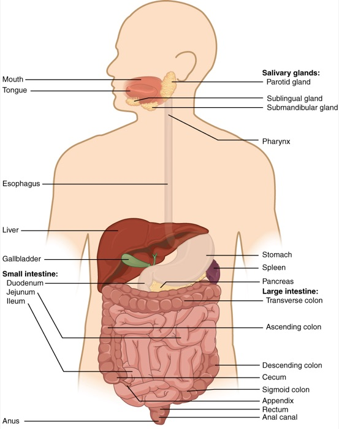

Ecografia dell'addome a Pozzallo
Un esame completo per controllare gli organi dell'addome: fegato, colecisti, pancreas, milza, reni, vescica. Rapido, indolore e senza radiazioni. Su appuntamento a Pozzallo (RG), con referto e spiegazione al termine.

Che cos'è e a cosa serve
L'ecografia dell'addome permette di osservare gli organi interni e di valutarne forma, dimensioni e struttura. È utile per controllare fegato e vie biliari (compresi i calcoli della colecisti), pancreas, milza, reni e vescica, e per dare risposta a dolori addominali, esami del sangue alterati o controlli periodici.
Addome superiore, inferiore o completo
L'addome superiore studia fegato, colecisti, pancreas, milza e reni; l'addome inferiore la vescica e gli organi pelvici; l'addome completo li comprende entrambi. Sulla richiesta del medico è in genere indicato quale serve; se hai dubbi, chiamami e lo verifichiamo insieme.
Come prepararsi
La preparazione dipende dall'esame:
- Addome superiore o completo: digiuno da 6-8 ore (così colecisti e organi si vedono meglio).
- Addome inferiore / pelvi: vescica piena — bevi circa un litro d'acqua un'ora prima e non urinare fino all'esame.
Nel dubbio sulla tua preparazione, chiamami prima dell'appuntamento.
Come si svolge
Ti sdrai e appoggio la sonda sull'addome con un po' di gel. Niente aghi, niente radiazioni, nessun fastidio. In pochi minuti l'esame è completato e ti consegno il referto, spiegandoti con parole semplici cosa è emerso.
Domande frequenti
Devo essere a digiuno?
Per l'addome superiore o completo sì, digiuno da 6-8 ore. Per l'addome inferiore serve invece la vescica piena.
Che differenza c'è tra superiore, inferiore e completo?
Il superiore studia fegato, colecisti, pancreas, milza e reni; l'inferiore vescica e pelvi; il completo entrambi.
L'esame fa male o usa radiazioni?
No: è indolore e usa gli ultrasuoni, non le radiazioni. È sicuro e ripetibile.
Serve l'impegnativa del medico?
Per la prestazione privata non è obbligatoria. Se hai la richiesta, portala con eventuali esami precedenti.
Vedi tutti gli esami disponibili oppure l'ecografia della tiroide.
Prenota la tua ecografia dell'addome
Online in pochi passaggi, oppure chiama. Si riceve su appuntamento a Pozzallo (RG).
Prenota online